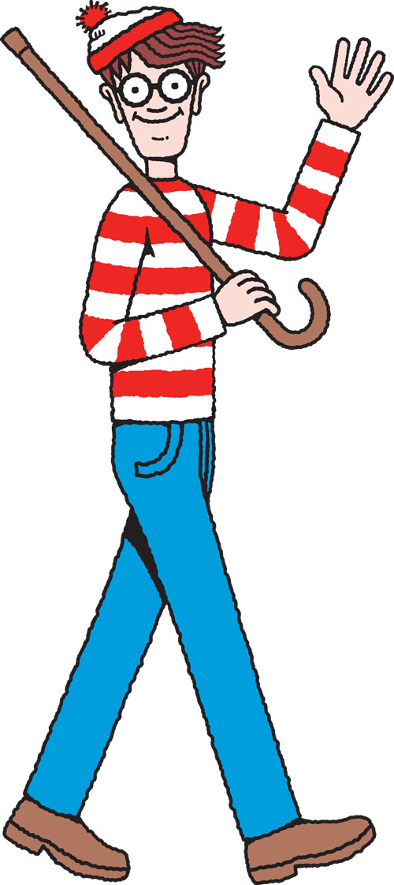

On the Subject of Where Is Wally
No one ever asks "How is Wally?"
You must find Wally. Once you have found him press the picture to defuse the module.
Use the arrow buttons to move about the picture. If you get to the edge of the picture a small black border will appear. Please find Wally.
Wally reference picture:
